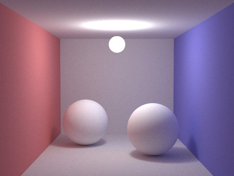
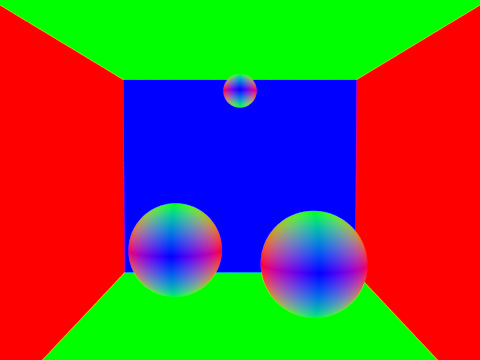
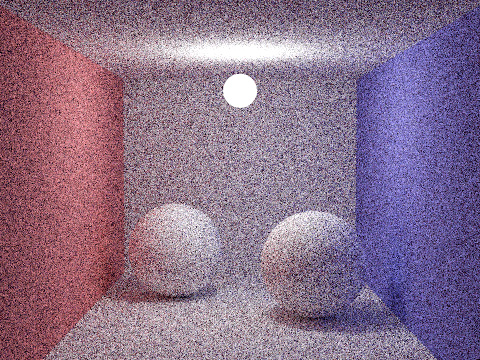
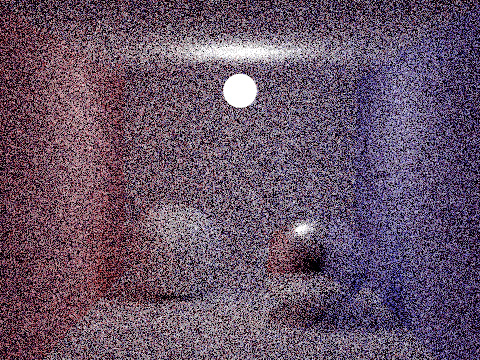
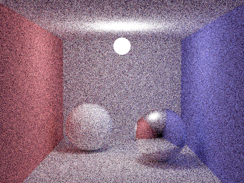
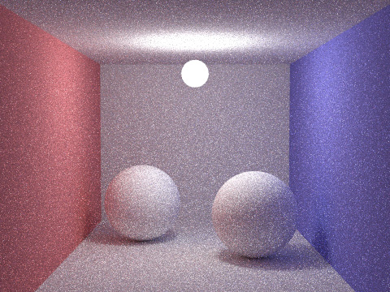
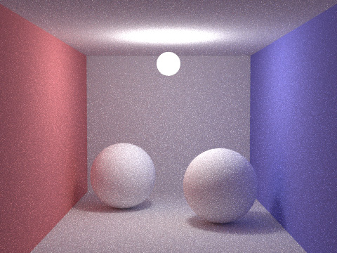
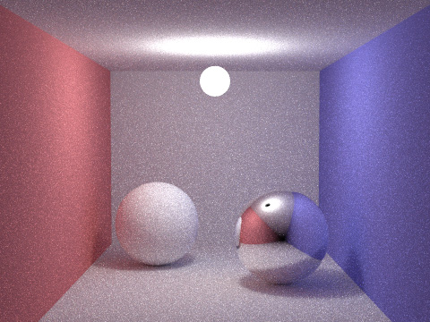
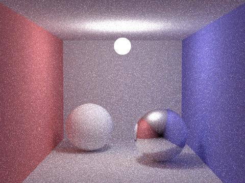
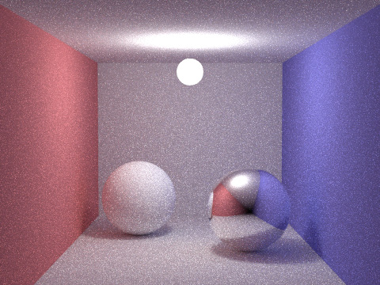

CS114 Project 2:
Monte Carlo Integration & Path Tracing
Due: Tuesday May 3, 2016 (23:59pm Pacific Time)
Work individually or in groups of two.
Part 2. Simple Path Tracing
Download the project codebase here.
In this part, you will implement a simple path tracer which solves the Rendering Equation (RE) using Monte Carlo integration. There is only one C++ source file simplept.cpp that you need to work on. Although it suffices to have all your code inside this one file, feel free to introduce separate header/source files if you think that looks cleaner.
Codebase Overview
The following is a brief overview of the provided codebase.Built-In Data Types
Random Number Generator
The codebase provides a thread-safe pseudo-random number generator rng (which is an instance of the class RNG) as a global variable. You can simply call rng() anywhere in your code to draw a random floating point number from $[0, 1)$.
3D Vectors
The pre-implemented class Vec can be used to represent positions, directions, as well as RGB colors. The following member functions have been provided:
- operator+(), operator-(), mult(): component-wise addition, subtraction, and multiplication;
- operator*(): vector-scalar multiplication;
- normalize(): vector normalization;
- dot(), cross(): vector dot and cross products.
Read the provided code and get familiar with these functions!
Ray
The Ray class has two data fields:
- Vec o: the ray's origin (i.e., starting position);
- Vec d: the direction of the ray.
This class will be used for making various queries (e.g., ray-scene intersection, radiance estimation).
Reflectance Models (BRDFs)
The reflectance models share a common (virtual) base class called BRDF. It has two (virtual) functions:
- eval($\mathrm{n}$, $\omega_o$, $\omega_i$) evaluates the function given incoming $\omega_i$, outgoing $\omega_o$, and local normal $\mathrm{n}$ directions.
- sample($\mathrm{n}$, $\omega_o$, i, pdf) randomly generates an incoming direction $\omega_i$ given the outgoing direction $\omega_o$ and local normal direction $\mathrm{n}$. The sampled direction $\omega_i$ should be stored in Vec &i, and the corresponding probability density value (i.e., $p(\omega_i)$) in double &pdf. Feel free to group i and pdf into one class if you prefer cleaner code.
Notice that these functions do not take surface position $\mathrm{x}$ as input since we assume all objects to have spatially invariant BRDFs.
The codebase has one semi-implemented reflectance model: DiffuseBRDF. Precisely, its eval() function has been provided, which implements $$ f_r(\omega_i \leftrightarrow \omega_o) = \frac{k_d}{\pi}. $$ You will need to complete its sample() function (for Task 1).
Spheres
Since complex geometry is not the focus of this project, there is only one shape that you need to deal with: spheres. The Sphere class contains the following data fields:
- Vec p stores the 3D position of the sphere's center;
- double rad stores the sphere's radius;
- Vec e stores the sphere's emitted radiance (in RGB) that is assumed to be identical in all directions;
- const BRDF &brdf stores a reference to the sphere's BRDF.
In addition, ray-sphere-intersection has already been implemented via the double Sphere::intersect() function. This function takes an instance of the Ray class, say r, and return 0.0 if the ray and the sphere does NOT intersect. Otherwise, it returns $t > 0$ which gives the intersection point by r.o + r.d*t.
Scene Description
The provided codebase has a Cornell-Box-like scene hard-coded: 
Objects
As shown above, the scene contains a number of spheres (the walls, the ceiling, and the floor are all spheres with large radii). These spheres are stored in a global array named spheres. Feel free to play with alternative configurations, but please keep the scene unchanged (unless insturcted otherwise by the following tasks) in your submissions.
Camera
Built-In Global Functions
For your convenience, a number of useful global functions have been provided.
void createLocalCoord(const Vec &n, Vec &u, Vec &v, Vec &w)
As mentioned in class, this function takes a normal direction $\mathrm{n}$ and returns three vectors $\mathrm{u}$, $\mathrm{v}$, $\mathrm{w}$ that are unit-length, pairwise orthogonal, and satisfying $\mathrm{w} = \mathrm{n}$. This function will be very useful for implementing direction sampling methods (e.g., uniformRandomPSA()).
bool intersect(const Ray &r, double &t, int &id)
This function takes a Ray r and checks if it intersects any sphere in the scene. If so, it does the following:
- Set t such that the intersection point is at r.o + r.d*t;
- Set id to the intersecting sphere's index (0 ~ 7);
- Return true.
Otherwise, the function simply returns false.
Compiling Your Code
It is recommended to use MSVC or GCC to compile your code.
MSVC Users:
Please use MSVC 2010 or higher to compile your code. You can create a Win32 Console project to utilize Visual Studio's powerful IDE, or simply compile your code on the command line. Either way, remember to include /openmp to enable multi-threaded computation via OpenMP. It is also recommended to increase the stack size to about 32MB by specifying /F32000000 to avoid stack overflow. To summarize, when using the command line, compile your code with cl simplept.cpp /openmp /O2 /F32000000.
GCC Users:
Please use GCC 4.2 or higher with good OpenMP support. Compile your code with g++ -std=c++11 -O3 -fopenmp -o simplept simplept.cpp.
Running Your Code & Viewing the Rendered Image
You need to run the compiled code under the command line by calling simplept followed by the number of samples per pixel (spp). By default, the code runs at 4 spp.
After the rendering process is finished, an image named image.ppm in PPM format will be saved under the working directory. To view this image, use ImageMagick's display command. If you are a Windows user and prefer having a light-weight tool with a GUI, use IrfanView instead.
Functions To Be Completed
The main function you will need to implement is Vec receivedRadiance(const Ray &r, int depth). As mentioned in class, this function computes the radiance received at location r.o from direction r.d. You will need to perform a ray tracing (by calling the global intersect() function) to find an actual surface point upon which regular (outgoing) radiance can be estimated.
As a placeholder, this function currently visualizes the normal directions for all surface points.  Please read the code and understand how the normal directions are computed: you will need it for later tasks!
Task 1. Path Tracing Version 0.5
Your first task is to implement the "Version 0.5" path tracing algorithm (see page 19 of the slides). Precisely, you need to implement a path tracing algorithm that
- Uses Russian roulette with rrDepth = 5 and survivalProbability = 0.9 to avoid infinite recursions;
- Uses a fixed distribution uniformRandomPSA() to sample incoming directions.
Your main task is to modify the global function receivedRadiance() accordingly. Feel free to add additional functions (e.g., radiance(), reflectedRadiance()) if necessary. To implement the sampling of incoming direction, you need to finish DiffuseBRDF::sample() using the uniformRandomPSA() method covered in class.
If everything works properly, you should be able to get renderings similar to below:
 |
 |
| 64 spp | 256 spp |
Create a folder named task1 with all your source files for this task.
Task 2. Specular BRDFs
The goal of this task is adding the ideal specular BRDF (see slide 38) to the system. In particular, you should implement a new class SpecularBRDF as a subclass of BRDF.
To use this new type of BRDF, create an instance with ks = Vec(0.999, 0.999, 0.999). Then, change the BRDF of the second last sphere (the one marked as "Ball 2") from brightSurf to this new specular BRDF instance. If you have implemented Task 1 properly, receivedRadiance() (as well as all other radiance estimation functions) do not have to be modified.
With a correct implementation, you should see the following:
|  |  |
| 64 spp | 256 spp |
Create a folder named task2 containing all your source files for this task.
Task 3. Path Tracing with Next Event Estimation
Task 3-1. Path Tracing Version 1.1
Now it is time to take some real challenge. For this task, you need to implement the "Version 1.1" path tracing with next event estimation (see slide 36).
Since there is only one hard-coded light source in the scene (which is spheres[7], the last sphere), uniformly sampling a point on its surface can be done as follows. Let $\mathrm{p}_0 = (x_0, y_0, z_0)$ be the center of the light source and $r_0$ be its radius, and let $\xi_1$ and $\xi_2$ be two random numbers drawn independently from $U[0, 1)$, then $\mathrm{y} = (x_0, y_0, z_0) + r_0 (x, y, z)$ with $$ z = 2\xi_1 - 1, \quad x = \sqrt{1 - z^2} \cos(2\pi\xi_2), \quad y = \sqrt{1 - z^2} \sin(2\pi\xi_2), $$ will be distributed uniformly on the light source's surface (i.e., $ p(\mathrm{y}) \equiv \frac{1}{4\pi r_0^2} $), and the normal direction $\mathrm{n}_{\mathrm{y}}$ simply equals $(x, y, z)$.
Please use the original all-diffuse scene configuration (same as Task 1). If everything works properly, you should observe significant improvements on image quality:
|  |  |
| 64 spp | 256 spp |
Create a folder named task3-1 with all your source files for this task.
Task 3-2. Fixing Specular Surfaces
Path Tracing Version 1.1 works well on rough materials but has difficulty handling specular surfaces. For example, if switching to the scene configuration of Task 2, you will get results similar to the following:  Notice the black circle within the bright region on the glossy sphere? This is NOT an artifact. Instead, it is the mirror image of the spherical light source! The reason for this mirror image to be completely black is that our direct radiance estimation simply does not work for ideal specular surfaces.
Explanation: Given a surface point $\mathrm{x}$ and outgoing direction $\omega_o$, the direct radiance is estimated by randomly selecting a point $\mathrm{y}$ on the surface of the light source, and setting the incoming direction $\omega_i$ to $\text{normalize}(\mathrm{y} - \mathrm{x})$. Unfortunately, in this case, the estimated direct radiance will almost surely (i.e., with probability one) be zero. This is because $\omega_i$ has zero probability to exactly equal mirroredDirection($\mathrm{n}_{\mathrm{x}}$, $\omega_o$) (i.e., the mirrored version of $\omega_o$), which is required for the ideal specular BRDF to have non-zero values.
To fix this problem, one approach is to disable next event estimation at ideal specular surfaces. That is, when estimating the radiance value at $\mathrm{x}$ with direction $\omega$, one first checks if $\mathrm{x}$ lies on an ideal specular surface. If so, then follow Path Tracing Version 0.5 by simpling a direction and continuing the recursion. Otherwise, follow Path Tracing Version 1.1 by sampling a position on the light source first.
To implement this idea, you need to add a (virtual) member function to the BRDF class: virtual bool isSpecular() const = 0, as well as implementing this function for the subclasses DiffuseBRDF and SpecularBRDF. In particular, you should make DiffuseBRDF::isSpecular() to return false and SpecularBRDF::isSpecular() to return true. With these functions ready, you can then call brdf.isSpecular() in various radiance estimation functions.
With everything in place, you should see the following (much better quality than Task 2!):
|  |  |
| 64 spp | 256 spp |
Create a folder named task3-2 with all your source files for this task.
Extra Credit: More BRDFs
Implement more BRDFs (e.g., Blinn-Phong, microfacet) with proper sampling schemes, and apply them to various spheres in the scene. Create a folder named task-extra with all your source files for this task.